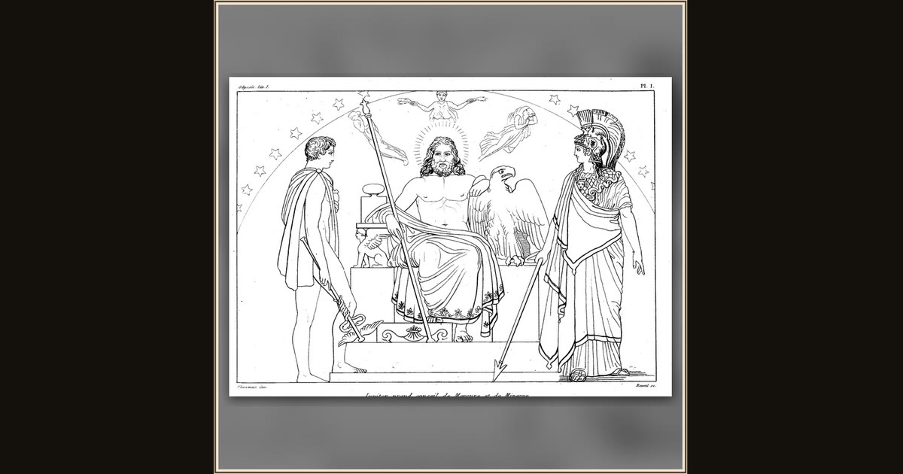

Zeus Enthroned with his Eagle and Thunderbolt
John Flaxman · 1810 · Wikimedia Commons
Look at the thunderbolt pointing downward by Zeus's feet and the eagle at his side: this is the bolt that will shatter Ulysses' ship for the crime against the Sun. Flaxman drew it for the gods' council that opens the poem - Athena and Hermes flank the throne b